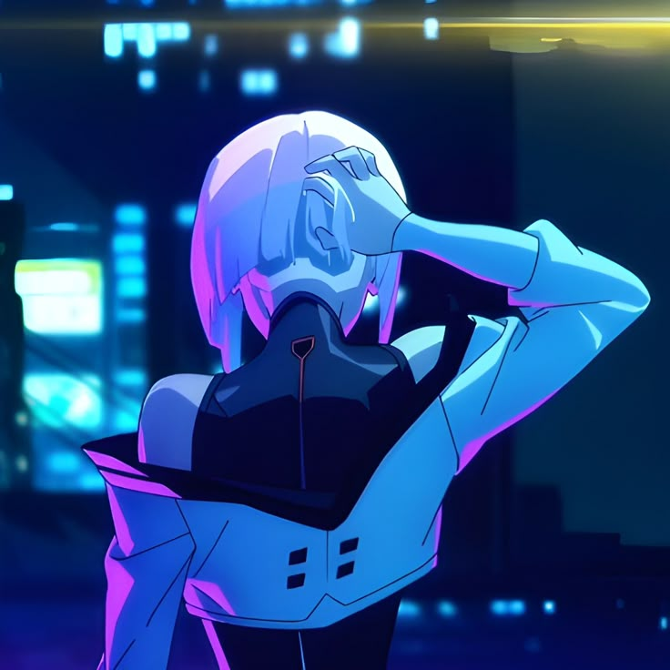

> initializing user_terminal_v2.4...
OPPERGAY.NL
a quiet corner of the wire // 静かな場所
// current_thought
SIGNAL: LIVE
[ retrieving thought... ]
// recent-fixes
- [NEW] added current thought panel
- [NEW] added recent fixes panel
- [UPD] added projects to projects_log
- [REM] removed audio stream integration
[01]
about_me
// 自己紹介
Hi! I'm DRAGONHJ — i like to be creative and do stupid things with the internet.
I code small simple things. still learning!
[ MORE_DATA_PENDING ]
[02]
quick_facts
// データ- [ fact_01 :: i like the cyberpunk aesthetic! ]
- [ fact_02 :: mainly gamemaker and html ]
- [ fact_03 :: love grizzly bears ]
- [ fact_04 :: i hate deadlines ]
- [ fact_05 :: currently crocheting ]
[03]
projects_log
// 作品
[04]
log_records
// 記録- LOG_001 // FIRST BOOTsector_7 came online. nobody remembers starting it.
- LOG_002 // MAINTENANCEone bug was fixed. three unrelated systems improved.
- LOG_003 // OPERATOR STATUSthe operator continues to maintain the system. results remain inconclusive.
- LOG_004 // ARCHIVE INCIDENTdocker-compose.yml.txt is not a typo. it is a cry for help. i'm looking at you emre.
- LOG_005 // ACCESS RECOVEREDyou were not supposed to find this record. please act surprised.
[05]
change_log
// 更新履歴- added current thought panel
- added projects to projects_log
- removed audio stream integration